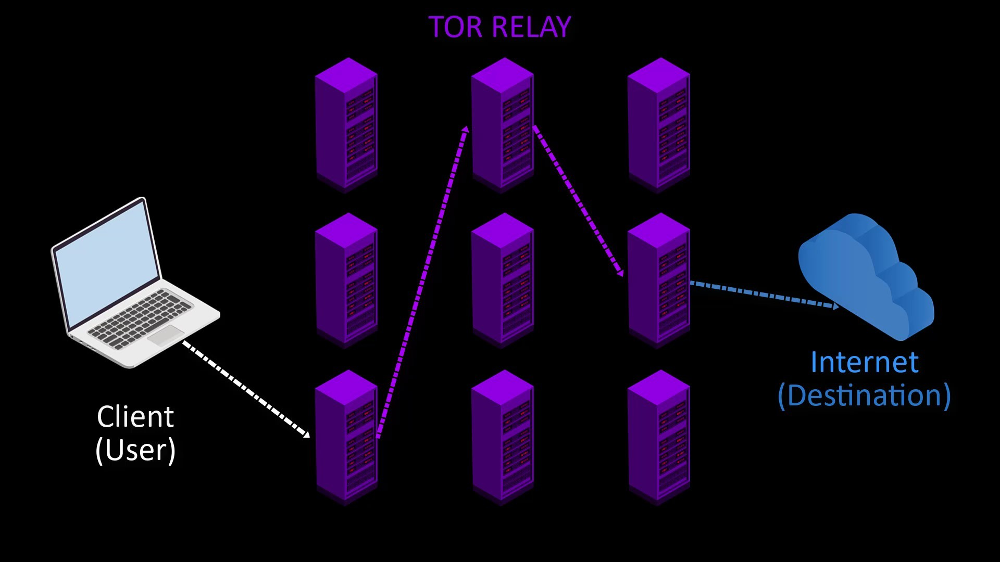

What is Tor?
The Tor project is an intelligence solution developed by the US Navy, to protect the U.S. intelligence communications online. Nowadays, however, it continues to serve as a non-profit open source organization that promotes privacy online, and is open to the masses. If you don't know what the expression "open source" means here; open source means that all source code of the project is shared publicly. Since all the source codes of the project are shared openly, the project can be developed much faster by many volunteers, ensuring the absence of malicious code. To sum up; If any project is open source, that project is under everyone's control.
The main source of funding for the Tor Project comes from donations collected from volunteers, as well as a large amount of support received from many sponsors, including the American government. Interestingly, while some agencies of the US government provide substantial support for the development of the project, others routinely spend a lot of resources to bypass the security of the Tor network. In other words, a lot of funding is provided by the United States to the Tor project at the same time for both the development and exploitation of security. This is interesting because Tor is not only available to the US government, it is free and easily available to people all over the world. Government support is thought to have different political and strategic reasons, and the Tor independent organization is working to improve its funding base by taking these criticisms into account. Nevertheless, considering that "U.S. Department of State Bureau of Democracy, Human Rights, and Labor" is the main supporting institution, it is claimed that the aid is not malicious, it is aimed at human rights. If you're curious, you can browse the Tor project's website for more sponsorship information.
The name Tor comes from the expression " The Onion Router" , which describes the multi-layered encryption and routing to ensure privacy.

Tor's main goal is to distort our footprints on the internet, allowing us to access the internet anonymously and uncensored.
